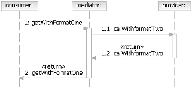
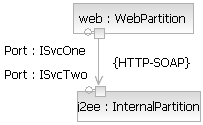
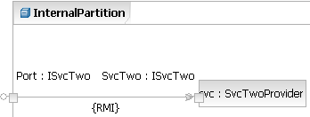
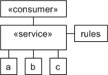
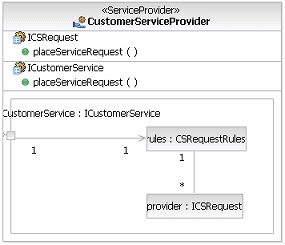
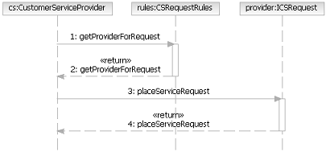

| Рекомендация: Service Mediation |
 |
|
| Связанные элементы |
|---|
IntroductionMediation is the act of intervention between conflicting parties to promote reconciliation or compromise. In particular, three common forms of reconciliation are required in distributed systems in general and service-oriented solutions in particular.
It is important to note that more and more middleware platforms provide capabilities for advanced mediation without having to develop explicit mediation components. In this case, as the middleware detects mismatches in data structure or communications protocols, it can perform the mediation in its runtime. It is also possible for these platforms to provide mediators that act as switches based on message content and business rules to select the correct implementation of a given consumer request. Data Mediation in ActivitiesIn terms of connecting services where the definition of messages do not match or the messages require transformation between sender and receiver, it is possible to use a capability provided by UML 2.0 Activities to denote the transformation between the sender and receiver. This capability, the association of a UML 2.0 Behavior to an ObjectFlow between two Actions, allows for the identification of a reusable transformation behavior that can turn one message into another (specifically from the UML 2.0 specification Changes or replaces data tokens flowing along edge). As noted above, the transformation is a reusable element. As such, it can be identified to transform one message type to another and then be used wherever needed in mediating messages between a sending and receiving service. Note that, although the UML does provide a set of actions for navigating, reading, and updating a structure, these are relatively complex and may prove too hard to use in defining transforms. It is expected that the transform will either link to a more compact representation (consider the XSL/T language) or a new way of expressing UML actions needs to be provided. Data mediation can also be treated as a concrete pattern of service iteration. For example, there is an explicit mediation service responsible for the implementation of one or more data transformations. In this case, the mediator has to respond to messages sent by the consumer, transform the message, and pass on to the service, as shown below.  Protocol Mediation on Service GatewaysMediation of protocol on the other hand is well understood and supported explicitly in the model. As the protocol information is specified as the binding for a service channel, it is possible to introduce either additional <<Service>> or <<Service Gateway>> model elements that alter the protocol specification. For example, in the following composite structure diagram you see two partitions, one for Web-facing services and one for internal services, and there is a service channel between the partitions with a binding of "HTTP-SOAP", something that is common for Web-facing services.  The issue is that, to support the required level of performance and other non-functional requirements, all communication within the internal partition takes place over platform-specific protocols. The following diagram shows how a service is connected to the service gateway "Port : ISvcTwo" using the Java RMI protocol, but how is it then that the Web partition connects to the same gateway using HTTP-SOAP?  The answer is that the service gateway itself can mediate the protocol by converting message structures and invocations from one format to another. This is common functionality usually provided by middleware such as Object Request Brokers (ORBs) or Message Brokers. In fact, it would be possible to generate from the model above to such middleware if required, or to reify "Port : ISvcTwo" as a service in its own right which takes calls from the Web partition and resends them to the enclosed services. Again, it is possible for the mediation to be modeled explicitly as a service, rather than a service gateway, that exposes the correct interface with the consumer-side binding and delegates implementation to the provider service with a different binding. Invocation Mediation using Service CompositionAs we described in the introduction, it is common to define a structure where one service is dependent on another service for some operation.However, the actual service which will be called for any particular request is dependent on details embedded in the request, who the requester is, and business rules applied using this information. The commonly given example for this is a customer request, the receiving service may choose one of two implementations based on the level of the customer. For example, customers who are known to spend more money might get preferential treatment.  As we described earlier, it is important in this kind of mediation to try to externalize the rules used to choose between one or more providers of the actual operation implementation. In the diagram above, we show this as a rule component attached to the mediating service. Obviously it is possible to build the solution as a set of services where the mediator, rules, and all implementers are separate services. This can be seen below.  As you can see, the mediation component owns not only its realized service specification, but also a service specification required to be implemented by all the services it mediates. This allows us to define both the composite structure of the service (shown above) and the dynamic behavior shown below. Note that in the structure above, the part representing the mediated services is denoted by the required interface and shown with an unbounded multiplicity.  Again, it is possible that this kind of content-based or rule-based routing of messages can be accomplished by the middleware platform chosen as part of the solution architecture. |
© Copyright IBM Corp. 1987, 2006. Все права защищены.. |